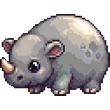

 Psychic
PsychicTap a stage to read its story.
Stonini is a chubby grey rhinoceros calf with smooth stone-textured skin and a single small blunt horn on its nose. Its four stubby legs carry it with a trundling shuffle that shakes pebbles loose from the granite paths of Granite Heights. Despite its solid build, Stonini has gentle curious eyes and will stop mid-charge to examine an interesting rock. Young trainers discover quickly that Stonini learns best through touch - press a word into its flank and it will remember it forever.
Field note: Stonini tests every rock it meets with a light headbutt - the hollow ones it marks with a scratch to find again later.
Granite Heights. Stonini and its family are found in the Granite Heights. See everyone who lives there.
Share a Bond Food that matches its types to become friends. Stonini loves:
A Bond Food is not a trick. It joins your spirit with the Kimuro's spirit, and only when it chooses you.
Print the Kimuro adventure packs: mazes, cards, a board game and Bond Mark medals.
See the printable packs